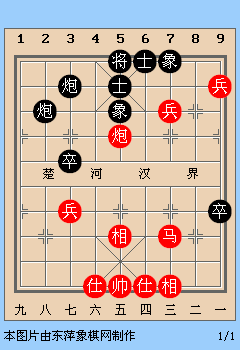
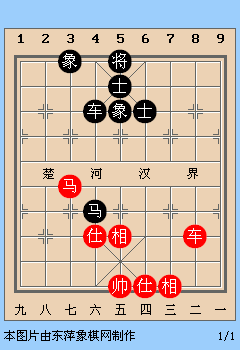

Features of Xiangqi Pieces
A basic introduction to Xiangqi Strategies!
Before you read this post, be sure that you are aware of the basic movements of Xiangqi pieces. The main objective of this post is to present the basic yet important roles of Xiangqi pieces.
Note: The Chinese characters as shown are a rough guideline to help you recognising the individual roles of pieces. Unfortunately, some Chinese chess sets do not use the standardised characters in naming the pieces. Some chess sets use simplified characters such as 马 (Horse/Knight), and 车 (Chariot/Rook); meanwhile 包 might refer to a cannon instead of 炮/砲.
Pawns/Soldiers (兵/卒) During the opening of a game, Pawns are easily threatened by opponent's offensive pieces. They could be weak during the beginning of a game, but Pawns can become important when the game develops into mid-end stage.
First, without the assistance of other Xiangqi pieces, we don't simply move the central Pawn. Notice that the central Pawn will no longer be protected by your Horses in the following figure.

When we move the central Pawn forward across the river, it needs the assistance or protection from your other pieces like Cannon, Horses or Chariots. The following figure illustrates an example of this.
Second, a general practice is that we choose to move the Pawns such that they will not block your Horses from moving forward (left figure). Likewise, you can move your Pawn to prevent opponent's Pawn positioned along the river side and block your opponent's Horses (right figure).
How about the Pawns which have moved across the river and got into the opponent's territory? A good position is that your Pawn can limit the movements of the opponent's piece and your Pawn is still within the protection by your other pieces like Horse (left figure). Another advantage of having your pawn placed along the Pawn rank of opponent's territory is that you can use your Pawns to omit your opponent's Pawns which are still positioned in their pawn rank. Depending on the game situation, it is not advised to move your Pawns beyond the pawn rank without protection as they are easily threatened by opponent's pieces (right figure). Likewise, you don't move your Pawns till the bottom row unless you are forced to do so or it helps to checkmate.
If you have more than one Pawn across the river, try to position them next to each other such that they can protect each other. The following figures are appropriate scenarios for standard draw games with 3 Pawns VS a single Chariot.
Horse/Knight (傌/馬/马) We have learned how the movement of Pawns can help to free up the barriers for Horses to move forward. What are the good/bad positions for your Horses to be placed at? A Horse can have 8 legal moves if there is no barrier blocking its ways. If a Horse is positioned at the bottom row or edge file of a board, its legal moves are limited and it can be threatended easily (black Horse of left figure) or limited space (right figure).
During the opening, players usually move forward their Horses either from 3rd and 7th files or from edge files (see the left figure in the Pawn section, offering free spaces). Other than this, the following figure shows one popular alternative, where your Horse moves from file 2 to file 4 (H2+4) after your Elephant positioned at the centre.
In Xiangqi, if your Horse is placed at the corner of your palace, it can help to protect your defensive pieces such as Elephant (left figure, note that this is a typical draw game). You can move your Horse to this corner easily following the last figure where you did H4+6, and the Horse will pass by the front of your own General. Furthermore, you can move your Horse to the top corners (within the reach of your Elephants), by moving from the corner of palace (files 4, 6) to files 3, 7 (right figure).

What are the advantages of having your Horses positioned at these positions? First, it can protect your Pawns at the edge file and center point. This is important during the mid-end game where you cannot simply sacrifice your Pawns for no reason. Second, it takes only two steps for your Horse to make a check and threaten your opponent's General. This is one of the best positions for you to place your Horse.
Cannon (炮/砲/包) Different from the Horse, your Cannon can move around the corner easily and threaten your opponent's pieces during the opening. However, as the number of pieces decreases as your game develops, you will notice that the capability of your Cannon to attack decreases as well (Remember this).
This example illustrates a typical attack by Cannon using your own Pawns as the Cannon mounts. This figure shows that how the Cannons can capture the opponent's Pawns. Recall that Cannons can also jump over the pieces horizontally.
If two Cannons are placed on the same row, together with a central piece in between, it can forms a defensive "wall" to block the threatening of your opponent. The following figures demonstrate a typical draw game. The animation shown in in the right figure demonstrates the detailed steps.
We can make use of the opponent's pieces as the Cannon mounts to capture/threaten their pieces. The following figure is a standard checkmate by Cannon (advisor as the Cannon mount).

Depending on the situation, we can also place our Cannon at the opponent's pawn rank and capture the piece at the other side of chess board (central opponent's Pawn as the Cannon mount). In this way, you can shuffle your Cannon's position to the other side and also block the movement of your opponent's Horse.
Another important role of Cannon is its capability to lock the opponent's pieces. If there is no pieces between your Cannon and your opponent's General, you have locked (prevented) the other defensive pieces such as Advisors, Elephants to protect the General (left figure). With the assistance of Chariot, it can create threatening mates. Meanwhile, you can also use your Cannon to lock your opponent offensive piece (right figure, the black Chariot is locked)
So far we have seen the examples of attacks made by Cannon except the draw game of two Cannons VS a single Chariot. How can we use Cannon for defensive purpose? One way is to place your Cannon at the river edge, with the help of your Pawn as the Cannon mount. Your Horse can be protected by your Cannon whenever there is a threat from opponent's Chariot (left figure).
On the other hand, you can offer an exchange of your Pawn from using your Cannon from the other side to free up the barrier for your Horse.

Chariot, the strongest piece in Xiangqi, offers fascinating ways of attack and defence during the whole game of Xiangqi. Note that the initial positions of Chariots are at the corners of chessboard. How should we bring the Chariots to advantageous positions?
The most popular options are the horizontal and vertical Chariots (literal translation from Chinese). For horizontal Chariot, usually you will move your Chariot to the front of your Advisors followed by moving forward to your river side (check the detailed movements for important remarks).
Sometimes, we can move the horizontal Chariot to the back of your Pawn (positioned at files 3, 7) and assist your Pawn to move forward (check the detailed movements for important remarks).
For vertical Chariot, the concept is the same as horizontal Chariot such that your Chariot will move to your riverside (left figure, for defending purpose) or opponent's Pawn rank (right figure, for attacking purpose). The starting point is after moving your Horse, Cannon (of the same side) away from their initial positions, you will move your Cannon to the Horse's starting point.
There is another popular route for your Chariot: It moves to the side of your General before moving forward.
There is one unpopular option you may consider in case you are running out of better options.
What are the important rows or files such that the Chariots should occupy to gain initiative? During the mid-end games, it is important to occupy your own Pawn rank to protect your Pawns. Similarly, occupying your opponent's Pawn rank helps to capture their Pawns or placing pressure on the opponent's Horses (left figure). During the end game, it is better to occupy the central file (as a general rule of thumb). As shown in the following right figure, if the red Chariot does not occupy the central line, the black player will win this game after occupying the central line with his Chariot.
Elephant, as one of the defensive pieces which never cross the river, in fact can assist in attacks when it works together with cannon. During the end games, as the number of pieces decreases, we will place the Elephants along the river side as cannon mounts. We can check mate the General by attacking opponent's Elephant using two cannons as shown below.
Concerning Elephant's defensive role, it can effectively limit the movement of Horses at their best positions (left figure). It is also useful for exchanging your Pawn with opponent's Pawn such that it opens up the way for your Horse (right figure). Elephant is an effective piece to block the threats imposed by Cannon. A general consensus is that if you are lacking of one or both Elephants, be aware of the attacks from opponent's Cannon.
Advisor, a defensive piece that never cross the river, behaves similarly to Elephant that it can be a cannon mount especially during the end games. With a single Canon and another Advisor, you can win the game where your opponent has two Advisors (left figure). Advisor plays an important role in blocking pieces coming nearby your palace to threaten your General, especially blocking opponent's Horse (right figure). Another general consensus is that if you lack of Advisors, be aware of the attack from opponent's Horse.
In the previous example, we noticed that the Advisor can be your Cannon mount and helps your Cannon to capture the Pawns. Position one of your Advisors at the top of your palace (see the following figure) can help your General to move away from the central line either to the left or right. This is useful to avoid the attacks from opponents.
The main role of General, is of course to avoid being checkmate by your opponent. General can play an important role to control, lock and assist the offensive pieces to win a game! Remember that the generals will never face each other directly. A lot of Xiangqi end games need the help of General to checkmate the opponents. We suggest you to check out typical Xiangqi end games for this information.
Concerning the movement of general, the rule of thumb is to avoid placing your general at the top of your palace, if this is not necessary. The following figure suggests a bad position of General which could be checkmate easily.